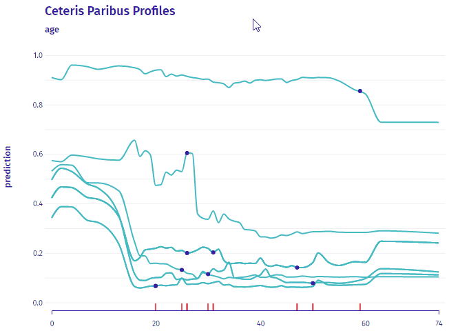

Overview
The ingredients package is a collection of tools for assessment of feature importance and feature effects. It is imported and used to compute model explanations in multiple packages e.g. DALEX, modelStudio, arenar.
The philosophy behind ingredients explanations is described in the Explanatory Model Analysis: Explore, Explain, and Examine Predictive Models e-book. The ingredients package is a part of DrWhy.AI universe.
Key functions:
-
feature_importance()for assessment of global level feature importance, -
ceteris_paribus()for calculation of the Ceteris Paribus / What-If Profiles (read more at https://ema.drwhy.ai/ceterisParibus.html), -
partial_dependence()for Partial Dependence Plots, -
conditional_dependence()for Conditional Dependence Plots also called M Plots, -
accumulated_dependence()for Accumulated Local Effects Plots, -
aggregate_profiles()andcluster_profiles()for aggregation of Ceteris Paribus Profiles, -
calculate_oscillations()for calculation of the Ceteris Paribus Oscillations (read more at https://ema.drwhy.ai/ceterisParibusOscillations.html), -
ceteris_paribus_2d()for Ceteris Paribus 2D Profiles, - generic
print()andplot()for better usability of selected explanations, - generic
plotD3()for interactive, D3 based explanations, - generic
describe()for explanations in natural language.
Installation
# the easiest way to get ingredients is to install it from CRAN:
install.packages("ingredients")
# Or the the development version from GitHub:
# install.packages("devtools")
devtools::install_github("ModelOriented/ingredients")Interactive plots with D3
feature_importance(), ceteris_paribus() and aggregated_profiles() also work with D3: see an example.

plotD3